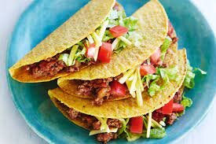

Taco Recipe

Tacos are a world classic. With this Mexican-inspired meal, you
can have your taste buds run wild with imagination. This savory recipe
will leave you asking for more!
Ingredients
- Ground Beef, Turkey or Vegan Meat Alternatives
- Shredded Chedder Cheese
- Chilli Powder Seasoning
- Lettuce
- Picante Sauce
- Sour Cream
- Tortillas
Steps
- Place Ground Beef on skillet and let fry for 15 minutes
- Chop lettuce is to quarter sizes
- Use chilli powder seasoning on meat and mix
- Warm tortillas on high pan and flip continuosly for 45 seconds
- Once meat is done, place on tortilla and add your condiments
- Add Lettuce, Sour Cream, Chedder Cheese, Picante Sauce and Enjoy!